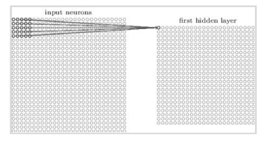

Motivation
For decades machine learning technology powered many aspects of modern society: from content filtering on social networks to recommendations on e-commerce websites to web searches, and it is increasingly present in consumer products such as cameras and smart-phones. The performance of these algorithms depends profoundly on the representation of the data given to them. Constructing a machine-learning system requires careful engineering of the model and a feature extractor that transforms the raw data into a suitable internal representation from which the learning subsystem could detect patterns in the input.
For example, when a logistic regression model is used to classify breast cancer, the system does not examine the patient directly but the doctor tells the system several pieces of relevant information also called features. But what if the features are changed or an image is given as input data, the model will simply fail to provide a useful prediction. The above stated problem proposed the need for a more advanced machine learning technique that allows a machine to be fed with raw (unstructured) data and to automatically discover the representations needed for classification or detection.
This led to the development of Deep Learning. Deep-learning models have multiple levels of representation, obtained by composing simple but non-linear modules each of which transform the representation at one level into a representation at a higher, slightly more abstract level. With the composition of sufficient such transformations, very complex functions can be learned. Nowadays Deep Learning is used in autonomous driving, transcription of speech into text, face detection, photo tagging, machine translation and many other cool applications.
Neural Networks
In the past 10 years, the best-performing artificial-intelligence systems — such as the speech recognizers on smartphones or Google’s latest automatic translator — have resulted from a technique called “deep learning.
Deep learning is in fact a new name for an approach to artificial intelligence called neural networks, which have been going in and out of fashion for more than 70 years. Neural networks were first proposed in 1944 by Warren McCullough and Walter Pitts, two researchers at University of Chicago.
Deep Learning is the answer to the problem posed in the previous section. Deep Learning is achieved by using neural networks. Neural Networks are powerful because of their excellent performance with unstructured data viz. audio, image, text.
Every learning-based problem can be boiled down to a mapping problem. Deep learning maps inputs to outputs. It finds correlations. It is known as a “universal approximator”, because it can learn to approximate an unknown function f(x) = y between any input x and any output y, assuming they are somehow related (by correlation or causation, for example). In the process of learning, a neural network finds the right f, or the correct manner of transforming x into y, whether that be f(x) = 3x + 12 or f(x) = e^x or a complex function beyond our imagination.
The definition of a neural network, more properly referred to as an
'artificial' neural network (ANN), is provided by the inventor of one of the
first neurocomputers, Dr. Robert Hecht-Nielsen. He defines a neural
network as:
" A computing system made up of a number of simple, highly
interconnected processing elements, which process information by
their dynamic state response to external inputs."
It might be difficult to understand the above formal definition of Neural Networks, so let us try to look at artificial neural networks from a different perspective to have an intuitive understanding of the concept. Let us think of ANN as a computational model that is inspired by the way biological neural networks in the human brain process information.
Artificial neural networks (ANN) are computing systems vaguely inspired by the biological neural networks that constitute animal brains. The neural network itself is not an algorithm, but rather a framework for many different machine learning algorithms to work together and process complex data inputs. Such systems "learn" to perform tasks by considering examples, generally without being programmed with any task-specific rules.
Biological motivation and connections
The basic computational unit of the brain is a neuron. Approximately 86 billion neurons can be found in the human nervous system and they are connected with approximately 10¹⁴ — 10¹⁵ synapses. The diagram below shows an animated drawing of a biological neuron.
The idea is that the synaptic strengths (the weights w) are learnable and control the strength of influence and its direction: excitatory (positive weight) or inhibitory (negative weight) of one neuron on another. In the biological model, the dendrites carry the signal to the cell body where they all get summed. If the final sum is above a certain threshold, the neuron can fire, sending a spike along its axon. In the computational model, we assume that the precise timings of the spikes do not matter, and that only the frequency of the firing communicates information. We model the firing rate of the neuron with an activation function which represents the frequency of the spikes along the axon.
Neural Network Architecture
From the above explanation we can conclude that a neural network is made of neurons, biologically the neurons are connected through synapses through which information flows (weights for our computational model). When we train a neural network we want the neurons to fire whenever they learn specific patterns from the data, and we model the firing rate using an activation function
But that’s not everything…
Before building our first neural network, it is imperative to understand
some basic notations and terminologies involved in describing
architecture of a neural network.
Input Nodes (input layer): No computation is done within this layer;
they just pass the information to the next layer (hidden layer most of the
time).
A block of nodes is also called a layer.
Hidden nodes (hidden layer): It is in Hidden layers where intermediate
processing or computation is done. They perform computations and
then transfer the weights (signals or information) from the input layer to
the following layer (another hidden layer or to the output layer).
It is also possible to have a neural network without a hidden layer and
we will come to this in the next section.
Output Nodes (output layer): Here we finally use an activation function that maps to the desired output format (e.g. SoftMax for classification problem).
Connections and weights: The network consists of connections, each connection transferring the output of a neuron i to the input of a neuron j. In this sense i is the predecessor of j. Each connection is assigned a weight Wij .
Activation function: The activation function of a node defines the output of that node given an input or set of inputs. A standard computer chip circuit can be seen as a digital network of activation functions that can be “ON '' (1) or “OFF” (0), depending on input. This is similar to the behaviour of the linear perceptron in neural networks. However, it is the nonlinear activation function that allows such networks to compute non trivial problems using only a small number of nodes. In artificial neural networks this function is also called the transfer function.
Learning rule: The learning rule is a rule or an algorithm which modifies the parameters of the neural network, in order for a given input to the network to produce a favoured output. This learning process typically amounts to modifying the weights and thresholds.
Logistic Regression as Neural Network – single layer
Single Layer Perceptron Neural Network
A single layer perceptron is the simplest Neural Network with only one neuron, also called the McCullock-Pitts (MP) neuron, which transforms the weighted sum of its inputs that trigger the activation function to generate a single output. Below is a sample diagram of such a neural network with X as the inputs, Θi as the weights, z as the weighted input and g as the output. Note that there are no hidden layers. A single input and a single output layer are present.
To understand how a neural network works as a logistic regression
classifier, let us consider a binary classification problem. For the
purposes of explanation, we will use this single neuron NN to predict the
target variable, using Logistic Regression.
We’re using a classification algorithm to predict a binary output with
values being 0 or 1. The function to represent our hypothesis is the
Sigmoid function, which is also called the logistic function.
Neural Network Input
From the previous figure we can observe that there are ‘n’ neurons in the input layer. The input to the output layer (a single neuron) is the weighted sum of the inputs Xi
Activation function
The input (z) is transformed using the activation function which generates values as probabilities from 0 to 1: Here we will use sigmoid activation function
Neural network activation functions are a crucial component of deep learning. Activation functions determine the output of a deep learning model, its accuracy, and also the computational efficiency of training a model—which can make or break a large-scale neural network. Activation functions also have a major effect on the neural network’s ability to converge and the convergence speed, or in some cases, activation functions might prevent neural networks from converging in the first place.
Some other non-linear activation functions are TanH (Hyperbolic Tangent), ReLU (Rectified Linear Unit), Leaky ReLU, Parametric ReLu, Softmax, Swish.
Hypothesis
If we combine all the above, we can formulate the hypothesis function for our classification problem:
Cost Function
Selecting the correct Cost function is paramount and a deeper understanding of the optimisation problem being solved is required. Initially it may seem that one of the most common optimisation functions, Least Squares, would be sufficient for our problem
Unfortunately, this won’t work. This is because we used a nonlinear
function for the hypothesis - the sigmoid function. For optimisation
purposes, the sigmoid is considered a non-convex function having
multiple of local minima which would mean that it would not always
converge.
The answer to this is using a convex logistic regression cost function, the
Cross-Entropy Loss, which might look long and scary but gives a very
neat formula for the Gradient as we’ll see later:
Deep Learning Structure
Forward Propagation
The process of taking input, applying weights and activation function is
repeated across layers till we reach the output layer. At the end of a
forward pass, we calculate the current loss as discussed in the previous
section. This forward pass from input layer (left end) to output layer (right
end) is called Forward Propagation.
Intuitively, our next task is to minimize the loss function. That is, we need
to find a combination of parameters that give us the minimum loss.
Using analytical methods, the next step here would be to calculate the
Gradient, which is the step at each iteration, by which the algorithm
converges towards the global minimum and, hence the name Gradient
Descent.
In mathematical terms this is just the partial derivative of the cost
function with respect to the weights. i.e. in every iteration you calculate
the adjustment (or delta) for the weights:
and repeat for each iteration
Backward Propagation
Here we will use the backpropagation chain rule to arrive at the same formula for the gradient descent.
As per the diagram above, the calculation of the partial derivative of the Cost function with respect to the weights, using the chain rule, can be broken down to 3 partial derivative terms:
Term (1) If we differentiate J(θ) with respect to h, we practically take the derivatives of log(h) and log(1-h) as the two main parts of J(Θ). With a little tidying up the maths, we end up with the following term:
Term (2) The 2nd term is the derivative of the sigmoid function:
Term (3) The 3rd term is just the input vector X:
If we substitute the 3 terms in the calculation for J’, we end up with the swift equation we saw above for the gradient using analytical methods:
Summary — Equations
Prediction & Classification
After finding the right combination of parameters we can predict output
class (0 or 1) with given input. The result is the predicted probability that
the output is 1. To turn this into a classification we only need to set a
threshold (for example 0.5) and round the results up or down, whichever
is the closest.
Regularization of Neural Networks
While training a neural network, one general problem we come across is the problem of overfitting or high variance. Overfitting occurs when the model learns the features and noise in the training data to such an extent that it affects the performance of the model on test data
Regularization is the technique to reduce variance in the model. Getting more training data is one of the easiest methods of solving the overfitting problem, penalizing cost function and changing NN architecture at random are a few others.
Types of Regularization:
- L1 and L2 regularization
- Dropout regularization
- Data Augmentation
1.) L1 and L2 regularization:
This regularization technique tends to decrease the value of the weight’s matrix. In L1 and L2 regularization we add a regularization term to the cost function.
L1 regularization:
L2 regularization:
where,
ƛ is the regularization parameter,
L is the cost function
By adding the weight matrix or the squared norm of the weight matrix and multiplying it by the regularization parameter in order to minimize the cost function, larger weights will be driven down. Reducing the weights will decrease the output value from activation function, thus decreasing the complexity of the model and decreasing the overfitting.
2.) Dropout:
In dropout regularization, few of the hidden layers’ nodes are randomly dropped with a fixed probability, for example if the probability threshold is set to 0.8, 20% of the units will be dropped.
In each iteration, dropout will randomly eliminate a few of the nodes, thus giving a new architecture for every iteration, this means that the neural network cannot rely on any input node, or will be reluctant to assign high weights to certain features since each has a random probability of being removed.
3.) Data Augmentation
Increasing the size of training data is efficient in decreasing the high variance problem, but getting more input data can be costly and not always possible. So, in order to get more data, one of the possible solutions is to make minor modifications in existing dataset. This technique can be useful in training CNNs
Augmentations Technique
- Rotation- Horizontal and vertical flip without changing the dimension of the image will produce multiple similar images.
- Crop and Scale- Scaling or randomly selecting random sections from an image will produce arbitrarily many images. The effect of these images on the model will be less but will prevent the model to overfit from a particular orientation or section.
- Gaussian Noise- Learning high frequency features that are not useful may lead to overfitting. Introducing gaussian error will effectively distort the high frequency features. Adjusting the right amount of noise can enhance the learning capability.
Optimization of Neural Networks
Quantifying Parameters:
In a deep neural network, there are thousands to millions of parameters to train. Being an iterative process, it is necessary to complete an iteration quickly to train the model effectively. Hence there is a need to optimize the gradient descent algorithm for an efficient model.
Types of Optimizers
1.) Mini-batch gradient descent:
In traditional gradient descent algorithms, all the training data is used,
which slows down the algorithm and with new datasets with millions of
data points, it will take an extremely long time to train a complete dataset
in an iteration.
Solution to this is to break up the data into a set of smaller datasets,
each set is called a mini-batch. In each iteration we train the algorithm
on a batch and proceed once training is done for each mini-batch. Thus
the time taken for each iteration will decrease and the model will be
trained much faster. The oscillations in the mini-batch gradient descent
will be greater as only a portion of the dataset is taken and, in a few
cases, may not lead to convergence.
The batch size is generally taken in powers of 2(64, 128, 512). When the
batch size is taken to be 1, i.e. training on a single data set in one
iteration, then it is called Stochastic Gradient Descent.
2.) Momentum:
Momentum accelerates SGD by navigating it along the relevant direction
and softens the oscillations in irrelevant directions, thus decreasing the
high variance oscillation in SGD which had made it difficult to converge.
Mathematically it adds a fraction ‘γ’ of the update vector of the past step
to the current update vector.
Equation of momentum is:
V(t)=γV(t−1)+η∇J(θ)
and update the parameter as
θ=θ−V(t).
3.) Adagrad:
Adagrad allows the Learning Rate -η to adapt according to the parameters. So it makes big updates for infrequent parameters and small updates for frequent parameters. Adagrad modifies the general learning rate η at each time step t for every parameter θ(i) based on the past gradients that have been computed for θ(i). Equation for learning rate update is:
Adagrad works really well for sparse datasets where a lot of input examples are missing. Adagrad has a major issue in that the adaptive learning rate tends to get really small over time. Some other optimizers below seek to eliminate this problem.
4.) Adam:
Adaptive Moment Estimation (Adam) computes adaptive learning rates for each parameter. In addition to storing an exponentially decaying average of past squared gradients, Adam also keeps an exponentially decaying average of past gradients , similar to momentum
vt and st are values of the first moment (Mean) and the second moment (uncentered Variance) of the gradients respectively gt is the gradient. Adam eliminates most of the problems faced during optimization such as vanishing learning rate, slow convergence or high variance in the parameter updates, and thus works well in practice and is the most widely used optimizer. Adam is more computationally expensive than all the other methods explained above.
Convolutional Neural Networks
Convolution Neural Networks use a special architecture which is particularly well-adapted to classify images. Using this architecture makes convolutional networks fast to train. This, in turn, helps us train deep, multi-layer networks which are very good at classifying images. Today, deep convolutional networks or some close variants are used in most neural networks for image recognition. Convolutional neural networks use three basic ideas: local receptive fields, shared weights, and pooling
Local receptive fields Consider a 28×28-pixel image. Each pixel intensity is an input neuron.
In a conventional neural network, each input neuron was connected to each neuron in the first hidden layer. But it isn’t really necessary to use networks with fully-connected layers to classify images because we can take advantage of the spatial structure, i.e. the relative position of each input neuron. So we won't connect every input pixel to every hidden neuron. Instead, each neuron in the first hidden layer will be connected to a 5×5 region called the local receptive field, corresponding to 25 input pixels. So, for a particular hidden neuron, the connections will look like this:

Each connection to the hidden neuron learns a weight and an overall bias. Hence each hidden neuron sort of learns to analyse its particular local receptive field. We then slide the local receptive field across the entire input image. For each local receptive field, there is a different hidden neuron in the first hidden layer.
And so on, building up the first hidden layer. Note that if we have a 28×28 input image, and 5×5 local receptive fields, then there will be 24×24 neurons in the hidden layer. This is because we can only move the local receptive field 23 neurons across (or 23 neurons down), before colliding with the right-hand side (or bottom) of the input image. The stride length need not necessarily be 1. We choose the optimal stride length using validation data to pick out the stride length which gives the best performance (ease of training without significant compromise in accuracy of classification). A similar approach is used to choose the size of the local receptive field.
Shared weights and biases Each hidden neuron has a bias and a 5×5 weight matrix (one weight for each input in the local receptive field). This set of weights and biases is used to search for a particular feature in that region. Now because it may be useful to apply the same feature detector at other points in the image, we use the same weights and biases for each of the 24×24 hidden neurons. This means that all the neurons in the first hidden layer search for exactly the same feature, just at different locations within the image. We can do this because of the translation invariance of images; move a picture of a cat a little way, and it's still an image of a cat. Hence, the map from the input layer to the first hidden layer is called a feature map. Each feature map is associated with a feature that it searches for in the image, using a single shared weight matrix and a single bias. The first hidden layer consists of multiple feature maps and is called a convolutional layer.
A big advantage of sharing weights and biases is that it greatly reduces the number of parameters involved in a convolutional network. For each feature map we need 5×5 shared weights, plus a single shared bias. So each feature map requires 26 parameters. If we have 20 feature maps that's a total of 20×26=520 parameters defining the convolutional layer. By comparison, suppose we had a fully connected first layer, with 28×28 input neurons, and a relatively modest 30 hidden neurons, as we used in many of the examples earlier in the book. That's a total of 784×30 weights, plus an extra 30 biases, for a total of 23,550 parameters. In other words, the fully-connected layer would have more than 40 times as many parameters as the convolutional layer. Reducing the number of parameters will result in faster training for the convolutional model, and will help us build deeper networks using convolutional layers.
Pooling Layers In addition to the convolutional layers just described, convolutional neural networks also contain pooling layers. Pooling layers are usually used immediately after convolutional layers. What the pooling layers do is simplify the information in the output from the convolutional layer. A pooling layer takes the output from each feature map (i.e. a particular layer in the convolutional layer) and prepares a more condensed feature map by summarizing a region of 2×2 neurons. One common procedure for pooling is known as max-pooling. In max-pooling, a pooling unit simply outputs the maximum activation in the 2×2 input region, as illustrated in the following diagram:
Note that since we have 24×24 neurons output from each feature map in the convolutional layer, after pooling we have 12×12 neurons for each map. We can think of max-pooling as a way for the network to ask whether a given feature is found anywhere in a region of the image, then throw away the exact positional information. The idea is that once a feature has been found, its exact location isn't as important as its rough location relative to other features. This helps reduce the number of parameters needed in later layers.
Notice that the value P value for two features INDUS and AGE is much high , indicating
the variables are not significant to be kept in the model .
Removing the two features would not affect the model fit that much .
Recurrent Neural Network:
Architecture: The architecture of RNN forms a directed graph along a sequence. It permits the dynamic temporal behaviour for time and text sequence. Let's take the example of the prediction of the next word in a sequence. For this, we need to learn the relation between the words prior to it and an internal state (memory) to process the sequence. To achieve it, a loop is created between the networks which allow the information to persist.
The unrolled version of this architecture is
where xi
is the input and yi
is the output.
RNN uses three types of weights:
- W , used for ht-1 → ht
- Whyused for ht → yt
- Wxxused for ht → yt
There can be many variations possible for the structure of RNN:
- One-to-One: This architecture has fixed input and fixed output size; we don’t need an RNN for this.
- One-to-Many: Input size is fixed but variable output size. Used for image captioning, where image is the single input and a caption string is the output. Music generation is also one of the applications.
- Many-to-one: This kind of network is used for sentiment analysis, for example, if we have to give the probability of a comment being positive or negative.
- Many-to-Many: Size of both input and output is variable. This architecture is used for translation as the output depends on the previous input and the size of the output is variable.